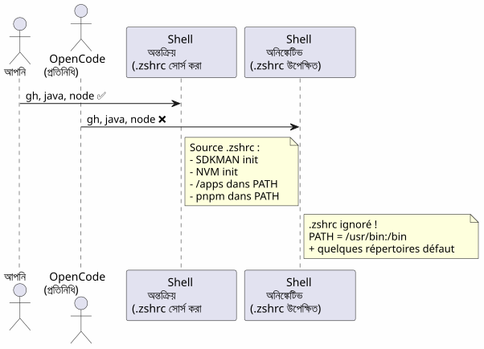
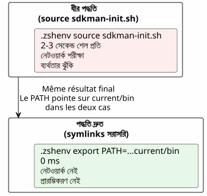
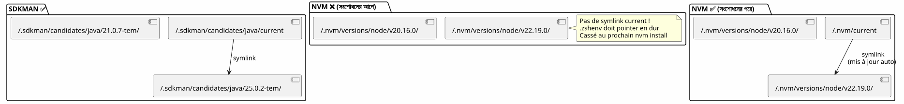
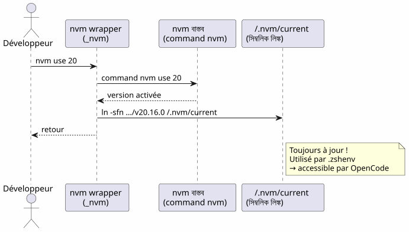
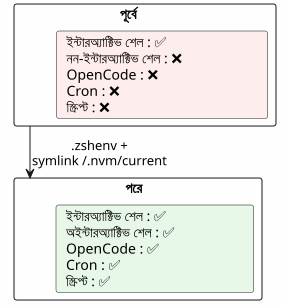

OpenCode এবং অসম্পূর্ণ PATH: কেন আপনার টুলগুলো এজেন্ট শেলের মধ্যে ছিল না
প্রকাশিত: 21 April 2026
।পাঠনের সময় : 13 minutes
আপনি আপনার টার্মিনালে OpenCode চালাচ্ছেন, সবকিছু কাজ করে। এজেন্টটি একটি চেষ্টা করছে`gh`— অনুপলব্ধ. এক`java -version`— অনুপস্থিত. এক`node`— কোনো জায়গায় না। তবু, এই সরঞ্জামগুলো সঠিকভাবে আপনার শেলে উপস্থিত। সমস্যা? OpenCode শেল চালায়অন্তরবākেতnahীনযারা কখনো আপনার পড়েন না`.zshrc`. এখানে কিভাবে এটি সঠিকভাবে ডায়াগনস্টিক ও মেরামত করা যায়
- টিক
-
</think>
([])
দৃশ্য: একটি অন্ধ এজেন্ট টুলের জগতে
এটা একটি মঙ্গলবারের সন্ধ্যা ছিল। আমি তাজা ইন্সটল করেছি।https://opencode.ai[মুক্ত কোড], এজেন্ট কৃত্রিম বুদ্ধিমত্তা যা বলিত ছিল যে আমার কোডিং পদ্ধতিকে রূপান্তর করবে। প্রথম পরীক্ষা: তাকে বলা যাতে আমার GitHub রেপোজিটরিগুলো তালিকাভুক্ত করুন।
$ opencode
> Utilise gh pour lister mes repos
❌ bash: gh: command not foundঅস্বাভাবিক।`gh`আমার টার্মিনালে এটি পুরোপুরি ভালোভাবে কাজ করতো। আমি কিছু অন্য চেষ্টা করছি :
> Vérifie la version de Java
❌ bash: java: command not foundতবে :
> Lance le build Gradle
❌ bash: gradle: command not foundJava, Gradle, Node,gh— এজেন্টের জন্য সব شيء দৃশ্যমান ছিল না। আমার টারমিনাল, সে, সব شيء দেখত। য budsি এজেন্ট ও আমি দুটি সমান্তরাল বিশ্বে বাস করতessem.
আমি বুঝতে ঘন্টা জুড়ে লেগেছি। ঘন্টা`echo $PATH`, de which java, বৃদ্ধিমান निराशা। আমি অবশেষে বুঝলাম যে সমস্যাটি সরঞ্জামগুলো ছিল না — এটি ছিলশেল. OpenCode, যে কোন এজেন্ট য.launch করে সাবপ্রসেসের মতো, শেলসে কাজ করেঅতিইন্টারঅ্যাক্টিভ। এবং Zsh, এই শেলস গুলোতে, আপনারকে পূর্ণরূপে উপেক্ষা করে`.zshrc`.
এটি হল সেই ডায়াগনস্টিক, সমাধান এবং আমি যে শিক্ষা নিলাম তার পূর্ণ বর্ণনা। যদি আপনি একটি AI এজেন্ট ব্যবহার করেন — OpenCode, Aider, Cursor, বা এমনকি cron স্ক্রিপ্ট — একটি দিন আপনি এই সমস্মুখীন হবেন।
বাগের অ্যানাটমি: দুই শেল, দুই বিশ্ব
একটি টার্মিনাল খুললে, Zsh এটি একটি শেল হিসাবে বিবেচনা করে।অন্তঃক্রিয়াশীল। ও চার্জ করছে`.zshrc`, যে সবকিছু শুরু করে: SDKMAN, NVM, pnpm, alias, আপনার সুন্দর প্রম্পট। আপনার পরিবেশটি সম্পূর্ণ।
কিন্তু যখন OpenCode একটি কমান্ড চালায়, তা একটি ইন্টারেক্টিভ টার্মিনাল চালায় না। এটি একটি শেল চালায়অন-ইন্টারেক্টিভ— একটি কাজের শেল, স্ক্রীন পিছনে কোনো মানুষ নেই। এছাড়াও Zsh, এই প্রেক্ষাপটে, লাফটি`.zshrc`. শুধুমাত্র পড়ে`.zshenv`.

সমস্যার মূল:Zsh শুধুমাত্র ইন্টার্যাক্টিভ শেলদের জন্য .zshrc সোর্স করে।. OpenCode, যেকোনো IA এজেন্টের মতো যা সাবপ্রসেস চালায়, ইন্টারঅ্যাকশন‑শেল ব্যবহার করে। এই শেলগুলি শুধুমাত্র`.zshenv`.
দোষièreরা: .zshrc বนาม .zshenv
Zsh-এ আছেচারটি আরম্ভিক ফাইল, প্রতিটির একটি নির্দিষ্ট ভূমিকা আছে। এটি একটি শোভন ডিজাইন — কিন্তু এটি সমস্যার মূলবিন্দু:
ফাইল |
কিংশ যখন |
ভুমিকা |
PATH বদলАО ? |
|
সবসময়(সাক্ষাত্কারিক + অ-সাক্ষাত্কারিক + লগইন) |
অপরিহার্য পরিবেশ চল, PATH |
�✅ হ্যাঁ — এটা SA-এর স্থান |
|
শুধুমাত্র লগইন শেল |
মন্দ অদেশ (প্রতি সেশনে একবার) |
সম্ভব সম্ভব |
|
শুধুমাত্র ইন্টারেক্টিভ শেল |
অ্যালিয়াস, প্রম্পট, সম্পূর্ণতা, ইন্টারঅ্যাক্টিভ টุลস |
ক্রিটিকাল ভেরিয়েবল জন্য নয় |
|
লগইন শেল (.zshrc-এর পরে) |
স্বাগত বার্তা, সমাপ্তি |
দুর্দൃশে |
তালিকাটি একটি ইঙ্গিত দেয়, কিন্তু তা গভীরভাবে বোঝা দরকার। এটা একটি বাড়ির কক্ষগুলো মনে করুন:
-
`.zshenv`এটিপ্রবেশ দালান— সবাই এই জায়গ দিয়ে যায়, ভিজিটর বা বাসিন্দা। আপনি যদি কিছু এখানে রাখেন, কোনো শেলও এটি দেখতে পাবে।
-
`.zshrc`হয়সালন— শুধুমাত্র বাসিন্দা (ইন্টারেকটিভ শেল) এ যায়। অতিথি (অ-ইন্টারেকটিভ শেল) হল দলে থাকে।
-
.zprofileet `.zlogin`এগুলো লগইন শেলের জন্য বিশেষ অংশ (যেমন আপনি SSH-এর মাধ্যমে সংযুক্ত থাকা সময়)।
দরুণ কঠিনতা হল যে আমাদের অধিকাংশ আমরা PATH কে বাসাগারে রাখি। এবং এই AI এজেন্টকে কখনো সেখানে প্রবেশ করার অধিকার নেই।

যখন আপনি একটি টার্মিনাল খোলেন, Zsh ইন্টারেক্টিভ হয়: এটি পড়ে`.zshrc`, সবSomething কাজ করে। OpenCode একটি শেল চালু করে একটি কমান্ড চালানোর জন্য, Zsh অন-ইন্টার্যাক্টিভ: তা কूदে`.zshrc`, শুধু পড়ে`.zshenv`. Et si `.zshenv`অস্তিত্ব নেই অথবা PATH ধারণ করে না — এটি বাঘুনি।
|
কেন Zsh এটি这样做？এটি Unix থেকে উত্তরাধিকার পেল একটি ডিজাইন নির্বাচন। একটি নন-ইন্টারেক্টিভ শেলকে হওয়া উচিতদ্রুত et প্রতিলিপিযোগ্য. ইলিয়াসগুলো, রঙিন প্রম্পটগুলো এবং SDKMAN-এর ভারী ইনিশিয়ালাইজেশনগুলোকে একটি cron স্ক্রিপ্ট বা একটি AI এজেন্টে লোড করলে তা ধীর ও ভঙ্গু হত। অতএব, বিভাজনটি যুক্তিমূলক:`.zshenv`মূলত (variables, PATH)`.zshrc`আরামের জন্য (alias, প্রম্পট, পূর্ণ করি)। সমস্যা তখন উঠে আসে যখন আমরা জরুরি বিষয়গুলোকে আরামের মধ্যে রাখি। |
ধাপে ধাপে নিদান
কোনো সংশোধনের আগে, আপনাকে সঠিকভাবে বুঝতে হবে যে কি পড়ছে না। এখানে একটি পুনরাবৃত্তিমূলক নিদর্শন পদ্ধতি দেওয়া হল — যদি আপনি কৃত্রিম বুদ্ধিমত্তা-এজেন্টদের সাথে কাজ করেন, তাহলে এটি আপনার বুকমার্কে রাখুন।
এজেন্টের পাথ যাচাই করুন
আমরা আপনার ইন্টারেক্টিভ টার্মিনালের দেখা কি এবং একটি নন-ইন্টারেক্টিভ শেলের দেখা কি তুলনা করি — অর্থাৎ, OpenCode-এ যা দেখা যায়।
# Dans votre terminal interactif (tout fonctionne)
echo $PATH | tr ':' '\n' | grep -v '^/usr' | sortসাধারণ ফলাফল :
/home/cheroliv/apps
/home/cheroliv/.nvm/versions/node/v22.19.0/bin
/home/cheroliv/.sdkman/candidates/java/current/bin
/home/cheroliv/.sdkman/candidates/gradle/current/bin
/home/cheroliv/.local/share/pnpm
/home/cheroliv/.local/binএখন, এজেন্ট যেটি দেখছে সেটি সিমুলেট করি— একটি অন-ইন্টারাক্টিভ শেল:
# Shell non-interactif : pas de .zshrc
zsh -c 'echo $PATH' | tr ':' '\n' | grep -v '^/usr' | sortফল :
/home/cheroliv/.local/binছয় পথের পাঁচটি গায়েব হয়ে গেছে।এজেন্ট তার পরিবেশের ৮৩% হারিয়েছে। যেমন কেউ আপনাকে আপনার রান্নার সরঞ্জামের অর্ধেক ছাড়া রান্না করতে বলে — আপনি শুধুমাত্র পানি গরম করতে পারবেন, কিন্তু আর কিছু করতে পারবেন না।
|
কমান্ড`zsh -c 'echo $PATH'`আপনারনম্বর 1 ডায়াগনস্টিক টুল. একটি সরঞ্জাম যা আপনি দৈনন্দিনে ব্যবহার করেন যদি ফলাফলে অনুপস্থিত থাকে, তাহলে আপনার AI এজেন্টও তা দেখতে পারবে না। এটি পরিবর্তনের আগে এবং পরেও পরীক্ষা করুন। |
২. .zshrc-এ থাকা কিন্তু .zshenv-এ না থাকা যে কোনো কিছু চিহ্নিত করুন
এখন, তারা দোষীকে খোঁজছে`.zshrc`. আমরা আমaders উপকরণ_groups mention করে liner_groups ফিল্টার করি :
grep -n 'apps\|SDKMAN\|NVM\|PNPM\|PATH' ~/.zshrcসাধারণত পাওয়া যায়:
119: PATH="/usr/bin/python3:$HOME/apps:$PATH" # ← pas exporté !
171: export NVM_DIR="$HOME/.nvm"
172: [ -s "$NVM_DIR/nvm.sh" ] && \. "$NVM_DIR/nvm.sh" # ← NVM init
176: nvm use --lts --silent # ← active une version
179: export PNPM_HOME="/home/cheroliv/.local/share/pnpm"
187: export SDKMAN_DIR="$HOME/.sdkman"
188: [[ -s "$HOME/.sdkman/bin/sdkman-init.sh" ]] && source "$HOME/.sdkman/bin/sdkman-init.sh"সব আছেঅদৃশ্যOpenCode এর জন্য।`PATH`লাইন ১১৯ থেকে조차 না`export`এ — এটি কখনো বর্তমান শেল থেকে যায় না। এটি একটি গুরুত্বপূর্ণ টেকনিকাল বিবরণ: কোনো ভেরিয়েবল ছাড়া`export`এটি সংজ্ঞা দেওয়া শেলের সাথে স্থানীয় থাকে। সাবশেলগুলো — Opencode-এর মাধ্যমেই চালিতদের মতো — কখনও এটি উত্তরাধিকার নেন।
৩. .zshenv ফাইল আছে কি পরীক্ষা করুন
cat ~/.zshenv 2>/dev/null || echo "FICHIER ABSENT"যদি উত্তর «অনুপস্থিত ফাইল» হয়, তাহলে সেখানে সবকিছু সিদ্ধান্ত নেওয়া হয়।
সমাধান: .zshenv + সঠিক পাথগুলো
কৌশলটি সহজ, কিন্তু তা নিখুঁত চাহে: রাখা`.zshenv` শুধুমাত্রঅবশ্যক পাথগুলো, ভারী আরম্ভক স্ক্রিপ্টগুলো সোর্স না করে। আমরা কোনো কিছুকে সরানো না।.zshrc`মধ্যে.zshenv`— সারাংশ বের করা হয়।
সব জরুরি পথসাথে .zshenv তৈরি করুন
`.zshenv`_available -টাএকটি ফাইলযে Zsh গ্যারান্টি দেয় যে এটি source করবে মধ্যেসবপ্রেক্ষিতগুলো। এখানেই PATH-কে যাওয়া উচিত।
export SDKMAN_DIR="$HOME/.sdkman"
export NVM_DIR="$HOME/.nvm"
export PNPM_HOME="$HOME/.local/share/pnpm"
export PATH="$HOME/apps:$HOME/.sdkman/candidates/java/current/bin:$HOME/.sdkman/candidates/gradle/current/bin:$HOME/.nvm/current/bin:$PNPM_HOME:$HOME/.local/bin:$HOME/.local/share/JetBrains/Toolbox/scripts:/usr/bin/python3:$PATH"|
ব্যবহার করা হয়`$HOME/.nvm/current/bin`ও না`$HOME/.nvm/versions/node/v22.19.0/bin`। কারণ : Node সংস্করণগুলো পরিবর্তিত হয়। একটি কঠোর পথ পরবর্তীতে ভুল হয়ে যায়।`nvm install`অতिरিক্ত বিস্তারিত পরবর্তী বিভাগে। |
কেন না source sdkman-init.sh .zshenv-এ ?
সর্বাধিক আকর্ষণীয় পদ্ধতি হবে সহজেই её মধ্যে পুনরাবৃত্তি করা`.zshenv`আমরা যা করি`.zshrc`— ইনিশিয়ালাইজেশন স্ক্রিপ্টগুলো সোর্স করুন। আমরাপারতকরার ইচ্ছা হত্তয়া
# ❌ MAUVAISE IDÉE
[[ -s "$HOME/.sdkman/bin/sdkman-init.sh" ]] && source "$HOME/.sdkman/bin/sdkman-init.sh"সমस्यাবলি:
-
ধीर:`sdkman-init.sh`নেটওয়ার্ক সমাধান এবং প্রতিটি শেলে যাচাই করে। অন-ইন্টার্যাক্টিভ শেলে, এটি একটি অপ্রয়োজনীয় খরচ।
-
হ্রাসপদSDKMAN একটি ইন্টারেক্টিভ কনটেক্সট আশা করে। এর শুরুবৎ (শুরুকরণ) একটি পাইপ বা একটি সাবশেলে শান্তভাবে ব্যর্থ হতে পারে।
-
অব্যবহার্যSDKMAN তার প্রার্থীদেরকে এ বসায়`~/.sdkman/candidates/<tool>/current/bin`— স্থিতিশীল সিমলিংকগুলো কার্যকর সংস্করণের দিকে নির্দেশ করে। এদের ব্যবহার করা যায়।সীধরে.

NVM কেস: ভার্সন ম্যানেজার একটি চিহ্ন Gone ভুলে যায়
NVM সমস্যা
C’est ici que l’enquête m’a mené le plus loin. SDKMAN a un design élégant : quand on fait sdk install java 25.0.2-tem, এটি একটি সিমলিঙ্ক :
~/.sdkman/candidates/java/current -> ~/.sdkman/candidates/java/25.0.2-temএই সিমলিংকসবसमয় আপডেটেড. পয়েন্ট করুন উপরে এটিতে`.zshenv`আপনি কভার করা আছে, কোনো শেল কি হোক। সুন্দর।
NVM, সে তৈরি করে নাকিছু নাএই ধরনের সিম্বলিক লিংক নেই`current`. স্থির নবয়ন পয়েন্ট নেই। আমাদের একটি ভার্সনকৃত ও হার্ড-কোডেড পথের দিকে ইশারা করতে হবে, যা এটা দেখে :
~/.nvm/versions/node/v22.19.0/bin/nodeআগামীটে`nvm install 24`, এই পথ morto? Wait I need correct Bengali: "মৃত" is adjective for dead. So "এই পথ মৃত।" Good. Then "আপনার". So final.

, এই পথ মৃত। আপনার`.zshenv`এটি এমন একটি সংস্করণের দিকে পয়েন্ট করবে যা আর সক্রিয় সংস্করণ নয়। এটি একটি সময়বম্ব।
|
কেন NVM এটা করে?NVM গতিশীলভাবে PATH পরিবর্তন করে প্রতিটি`nvm use`. এই ডিজাইন করা হয়েছে ঘন ঘন সংস্করণ পরিবর্তনকারী ডেভেলপারদের জন্য, একটি ইন্টারেক্টিভ শেলে। সিমলিঙ্ক`current`এটি প্রাথমিক স্পেসিফিকেশনে ছিল না — এটি ডিজাইনের একটি ভুল যা আমরা নিজেদের হাতে ঠিক করব। |
সমাধান: NVM- এর জন্য current সিমলিংক তৈরি করুন
যেহেতু NVM এটি করে না, আমরা নিজেদের করি। উপায়টি SDKMAN‑এর মতো — একটি সিমলিঙ্ক।`current`এটি সর্বদা সক্রিয় সংস্করণকে নির্দেশ করে। আমরা এটি একবার তৈরি করি, এবং তা স্বয়ংক্রিয়ভাবে আপডেট হওয়ার জন্য স্বয়ংক্রিয় করি।
# Créer le symlink initial
ln -sfn "$HOME/.nvm/versions/node/v22.19.0" "$HOME/.nvm/current"এখন,</tool_call>`.zshenv`, ব্যবহার করা হয় :
$HOME/.nvm/current/binবদলে :
# ❌ Chemin en dur — cassé au prochain changement de version
$HOME/.nvm/versions/node/v22.19.0/binsymlinkএর আপডেট স্বয়ংক্রিয় করুন

# À la fin de .zshrc, APRÈS le chargement de NVM
nvm use --lts --silent
ln -sfn "$(nvm_version_path "$(nvm current)")" "$NVM_DIR/current"
_nvm() {
command nvm "$@"
local rc=$?
ln -sfn "$(nvm_version_path "$(nvm current)")" "$NVM_DIR/current"
return $rc
}
alias nvm='_nvm'কীভাবে কাজ করে, বিস্তারিতভাবে :
র্যাপারটি`_nvm`সত্য কমান্ডটি কল করে`nvm`, তারপর সিমলিঙ্ক আপডেট করে। এলিয়াস`nvm='_nvm'`টাইপ করার সময় নিশ্চিত করে`nvm`, আমরা র্যাপারের মাধ্যমে যাই। এবং শেলের ইনিশিয়ালাইজেশনের সময়ও, আমরা একইভাবে পরে করি`nvm use --lts`.
|
`nvm_version_path`এটি NVMএর একটি অভ্যন্তরিক ফাংশন যা কোনো সংস্করণের সম্পূর্ণ পথ সমাধান করে। এটি পাথকে ম্যানুয়ালি পুনঃস্রষ্ট করার প্রয়োজন কমান। |
পথের সংক্ষিপ্ত সারণী
জালে যাওয়ার আগে, রূপান্তরের একটি দৃশ্য সারাংশ। বামদিকে, আপনার যে ছিল (সব মধ্যে`.zshrc`, এজেন্টের জন্য অদৃশ্য). ডান পাশে, এখন আপনার কাছে আছে (প্রয়োজনীয় পথগুলো`.zshenv`, সর্বত্র দৃশ্যমান).
| উপকরণ | আগে (.zshrc শুধুমাত্র) | (.zshenv + symlink) এর পরে | ওপেনকোড द्वारा দৃশ্য? |
|---|---|---|---|
|
PATH .zshrc-এ exports করা হয়নি |
|
✅ |
SDKMAN জাভা |
|
|
✅ |
SDKMAN Gradle |
`sdkman-init.sh`সোর্স করা `.zshrc |
|
আপনি একজন পেশাগত অনুবাদক। fr থেকে bn-এ অনুবাদ করুন। সমস্ত backtick কোড spans ( |
NVM নোড |
|
`$HOME/.nvm/current/bin`midpoint .zshenv (symlink) |
সকল ব্যাকটিক কোড স্প্যান ( |
pnpm |
|
|
✅ |
JetBrains Toolbox |
টুলবক্স দ্বারা .zshrc-এ স্বয়ংক্রিয়ভাবে যোগ করা হয়েছে |
`$HOME/.local/share/JetBrains/Toolbox/scripts`মধ্যে .zshenv |
✅ |
পাইথন ৩ |
`/usr/bin/python3`PATH .zshrc-তে |
প্রস্পষ্টভাবে .zshenv-এ |
(Empty) |
�ঝুঁকি ও মানন
এই পদ্ধতিতে সবকিছু পরিপূর্ণ নয়। এখানে সমস্যাগুলো দেওয়া হয়েছে যা আমি मुखোমুখি হয়েছি এবং কীভাবে এড়ানো যায়।

শেখা পাওয়া
-
.zshrc` ইন্টার্যাক্টিভ,
.zshenvসার্বজনীন— যদি একটি ভেরিয়েবল সব শেল (AI এজেন্ট, cron, স্ক্রিপ্ট, IDE) এ থাকতে দরকার, তাহলে Jaya এtte`.zshenv`. সালোনটি আরামদায়ক, কিন্তু প্রবেশের হলে একমাত্র স্থান যেখানে সবার গমন হয়। -
বার্জন ম্যানেজার সমান নেই— SDKMAN সিমলিংক তৈরি করে`current`ডিজাইনের মাধ্যমে। NVM না। এই ঘাটতি ম্যানুয়ালি পূর্ণ করতে হবে। এটি একটি গুরুত্বপূর্ণ শিক্ষা: আপনার PATH কনফিগার করার আগে, যাচাই করুন যে আপনার প্যাকেজ ম্যানেজার একটি স্থabile নকড়ি পয়েন্ট দান করে কি না।
-
.zshenv-এ প্রারম্ভ স্ক্রিপ্টগুলো উৎস নিন না—
sdkman-init.shet `nvm.sh`এইগুলি ইন্টারেক্টিভ শেলের জন্য ডিজাইন করা হয়েছে। এইগুলো ধীর এবং নাজুক একটি নন-ইন্টারেক্টিভ পরিবেশে। সিমলিংকগুলি`current`পর্যাপ্ত এবং তৎক্ষণিক। -
অ-ইন্টারেক্টিভ শেলে সর্বদা পরীক্ষা করুন—`zsh -c 'echo $PATH'`একটি এজেন্টের যা দেখে তা ঠিকভাবে অনুকরণ করে। এটি যাচাই পরীক্ষা। এই পরীক্ষা না থাকলে, আপনি জâne না যে আপনার কনফিগারেশন এজেন্টদের জন্য কাজ করে কিনা।
-
ওয়্র্যাপার প্যাটার্নটি পুন:প্রয়োগযোগ্য— একই প্যাটার্ন`_nvm`+`alias nvm='_nvm'`যে কোনও টুল যা ডাইনামিকভাবে PATH পরিবর্তন করে কোনও স্থিতিশীল চিহ্ন ছোড়াই না, সেগুলিতে প্রয়োগ করা হয়। এটি আপনার টুলবক্সের আরেকটি টুল।
শেষ যাচাই
এই তৈরি করার পরে`.zshenv`এবং NVM সিমলিংক যাচাই করুন যে সব شيء কাজ করে — দুটো প্রেক্ষাপটের মধ্যে:
# Shell interactif (votre terminal)
gh --version && java -version && node --version# Shell non-interactif (simulation OpenCode)
zsh -c 'gh --version && java -version && node --version'উভয়কে সফল হতে হবে। যদি হ্যাঁ, তাহলে আপনার AI এজেন্ট আপনার মতো একই টুলগুলো দেখবে। যদি না, ধাপে ধাপে নিরীক্ষনে ফিরিয়ে যান — আপনি সম্ভবত একটি পথ ভুলে গেছেন বা NVM সিমলিঙ্ক আপ-টু-ডেট নেই।
|
এই পরীক্ষাটি অটোমেটাইজ করুন।এই পরীক্ষাটি আপনার সরঞ্জামগুলোর প্রতিটি আপডেটের পরে চালানোর জন্য একটি হেলথচেক স্ক্রিপ্টে যোগ করুন। Un`zsh -c 'which java && which node && which gh'`CI-এ, এটি আকস্মিক ঘটনাদের বিরুদ্ধে একটি নিশ্চয়তা। |
(empty) একটি নন-ইন্টারঅ্যাক্টিভ শেল একটি নীরব অতিথির মতো: এটি শুধুমাত্র প্রবেশদ্বারের দিকে প্রদর্শিত যে বিষয়গুলো পড়ে। যদি PATH সালনে থাকে, তবে তা কখনো দেখবে না। __
লিঙ্ক
রسمী ডকুমেন্টেশন
-
Zsh দস্তাবেজ : Startup Files— Zsh ফাইল ইনিশিয়ালাইজেশনের অফিসিয়াল রেফারেন্স। সেখানে সব ব্যাখ্যা করা হয়েছে, যদিও প্রায়শই তা ভুলে যাওয়া হয়।
-
OpenCode : কনফিগারেশনOpenCode কীভাবে কনফিগার করবেন এবং এর চালানোর পরিবেশকে কীভাবে সেট আপ করবেন?